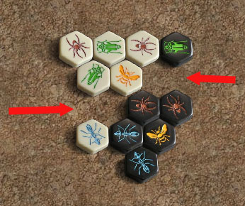

|
Piece Names
|
 |
Move Names
Note that this section is largely obsolete.
You used to see these cryptic "bA2 wG2-" notations displayed in the
game record section of the hive interface, but the modern version of
the interface displays the graphic representation directly. |
|  |
Gate
|
 |
DoorA door
formation is when two tiles are separated by the width of a whole
tile. Any piece can slide through the door, but
spiders gain extra mobility near a door; because when passing through a
door they have three choices of direction to continue.
|
 |
Ringa ring
formation is when pieces form a continuous
circle. Forming a ring is dangerous because all the pieces
potentially become mobile, but your opponent will get the first
opportunity to move one.
|
|
|
|
Site Map |
Go to BoardSpace.net home page |